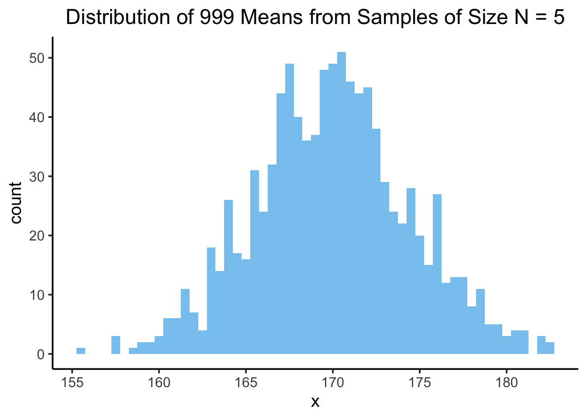

Why Poisson Processes are ‘The’ Core Model for Spatial Randomness
Extra Writeups
Author
Affiliation
Jeff Jacobs
jj1088@georgetown.edu
Published
October 16, 2025
Overview
I fumbled this concept towards the end of the Week 8 lecture, since I was rushing to try and get to intensity functions and pair correlation functions. As we know, this kind of guilt will weigh on Jeff’s mind until he creates a writeup where he can slow down and walk through it with the proper attention to detail… so here we are!
The reason we worry so much about the “proper” null model to use when we want to test spatial hypotheses (and the reason for creating a full-on Writeup about it), is that certain intuitions we may have developed in our standard (non-spatial) statistics courses fail to generalize easily to our current two-dimensional spatial setting! So, let’s:
Start by looking at what may be in our heads from these earlier classes when we hear the term “null model” (Part 1), then
Describe the trouble we run into if we try to haphazardly take the one-dimensional statistical notion of independent and identically distributed (i.i.d.) random variables and just “lift” it into two dimensions (Part 2), and finally
Conclude with the less-rushed version of what I said in class: that the Poisson Point Process model “saves us” by avoiding these troubles (Part 3)
Part 1: The Null Model from Introductory Statistics
In standard “one-dimensional” statistics, when we start building up our conceptual/methodological toolbox towards the goal of developing a set of statistical hypothesis tests, we usually start with the notion of a collection \(X_1, X_2, \ldots, X_n\) of \(N\) independent and identically distributed (i.i.d.) Random Variables.
The reason this odd term “independent and identically distributed” is so important is because is exactly this i.i.d. property that underlies the two key theorems of statistical sampling theory: the Law of Large Numbers (LLN) and the Central Limit Theorem (CLT).
Say we have a goal of figuring out the average height of Georgetown students, in centimeters. We don’t have any way to instantaneously “divine” this information from out of nowhere, however, so instead we decide to start sampling students from campus. We let \(X_1\) be the Random Variable corresponding to the height of the first person we sample, \(X_2\) be the Random Variable corresponding to the height of the second person we sample, and so on, up to \(X_n\), the Random Variable corresponding to the height of the final person we sample.
We make the assumption that the Random Variables in this series \(\{X_1, X_2, \ldots, X_n\}\) are independent, since we believe that learning the height of any one person doesn’t give us any information about the height of other people.
We make the assumption that the Random Variables in this series \(\{X_1, X_2, \ldots, X_n\}\) are identically distributed because we believe there is some underlying distribution (perhaps a Normal distribution) describing the population of Georgetown students, and that each of our samples is a single draw from this (assumed) underlying population distribution.
The second assumption (that \(\{X_1, X_2, \ldots, X_n\}\) are identically distributed) is super important for the wording of the LLN and CLT. To see exactly why these theorems are useful, we’ll add one more piece of information to this assumption, namely, that the underlying population distribution we’ve assumed has some well-defined mean\(\mu\)1. We actually don’t need to assume anything more than this, but for the sake of making a picture let’s also assume a well-defined standard deviation \(\sigma\).
These assumptions now allow us to visualize the population distribution of height, the distribution of the heights of all possible Georgetown students in the past, present, and future:
We won’t have any way of knowing the actual values\(\mu\) and \(\sigma\) in practice (if we did, we wouldn’t need to use this whoe sampling thing in the first place), but to make our visualization a little more concrete, let’s assume that this abstract population mean height is \(\mu = 170\text{cm}\) and population mean SD is \(\sigma = 10\text{cm}\). Then the above visualization becomes:
Code
(pop_plot <- base_pop_plot +labs(title="Hypothesized Population Distribution: N(170, 10)" ))
If our goal is to estimate this now-assumed underling \(\mu\) value, we can frame the LLN and CLT for our sample of size \(N\), \(\{X_1, X_2, \ldots, X_n\}\) as follows. Consider the mean of these i.i.d. RVs, \[
\overline{X}_{N} = \frac{1}{N}(X_1 + X_2 + \cdots + X_n).
\]
Notice how this RV \(\overline{X}_N\) is itself a Random Variable, with some distribution! We can actually use R again to visualize this separate distribution, of the number we get when we compute the mean of \(N\) samples:
Sample #1: 162.51, 151.24, 166.77, 163.45, 161.84
Mean = 161.16
Sample #2: 175.28, 165.1, 182.1, 168.89, 179.84
Mean = 174.24
Sample #3: 159.99, 164.23, 159.36, 163.04, 167.38
Mean = 162.8
And if we repeat this 1000 times, we’ll get 1000 different sample means: that is, 1000 different realized values of \(\overline{X}_N\) (here we display only the first 1000 of these realized values, for brevity):
If we plot the distribution of these values, we get a different distribution from the above. This time, it’s a sampling distribution! It’s a distribution of the averages we get when we sample from the population distribution:
Code
sample_mean_df <-tibble(x=sample_means)sample_plot <- sample_mean_df |>ggplot(aes(x=x)) +geom_histogram(binwidth=0.5,fill=cb_palette[2],alpha=0.75 ) +theme_classic(base_size=15) +labs(title="Distribution of 1000 Means from Samples of Size N = 5") +theme(plot.title =element_text(hjust=0.5))sample_plot

By overlaying this sampling distribution on top of the population distribution (though remember, again, that in the real world we’re never going to be able to discover this “true” population distribution), we can start to see what’s going on:
The values we’re getting for the sample mean, in blue here, vary around the true mean that we’re trying to estimate. And, intuitively, if we have the resources to take bigger samples (e.g., more time to ask more than \(N = 5\) people), this should give us even more accurate estimates of the population mean, which is what we indeed find in our simulation:
The two key theorems of sampling theory therefore describe (along with formal mathematical proofs) what we can see intuitively from the four plots above: that is, what happens to this RV as \(N\) gets bigger and bigger (goes towards \(\infty\)):
The Law of Large Numbers tells us that the middle of the blue sampling distribution will converge to the population mean\(\mu\).
It says in essence that we can pick any really small value \(\varepsilon\), and then, regardless of what particular small value we pick, the probability that \(\overline{X}\) is more than \(\varepsilon\) away from the (assumed) “true” mean value \(\mu\) goes to 0 as we take more and more samples: \(\Pr\left(|\overline{X} - \mu| > \varepsilon\right) \rightarrow 0\) as \(N \rightarrow \infty\).
The Central Limit Theorem gives us more specifics about the shape of the blue sampling distribution, and about how quickly the convergence guaranteed by the LLN will proceed.
It says that the blue sampling distribution will specifically be a Normal distribution, whose mean will be \(\mu\) and whose standard deviation will be \(\sigma / \sqrt{N}\). In symbols: \(\overline{X}_{N} \sim \mathcal{N}\left(\mu, \frac{\sigma}{\sqrt{N}}\right)\). The presence of \(N\) in the standard deviation is why we see the blue sampling distribution getting thinner and thinner above: as we raise \(N\), \(\sigma\) stays the same but \(\sqrt{N}\) gets bigger and bigger, which makes the overall standard deviation term get smaller and smaller!
Having built up to these two key theorems, we can now perform statistical hypothesis testing! Because, we can:
Take any specific sample we happen to have, \(\{X_1 = x_1, X_2 = x_2, \ldots, X_n = x_n\}\), and
Compare it to the expected shape of the sampling distribution under some hypothesis!
Continuing our above example, if we think that the “true” mean height of Georgetown students is \(\mu = 170\text{cm}\), we can take a sample of \(N\) Georgetown students and compare the mean height value of this particular sample with the distribution of mean height values that a population distribution with \(\mu = 170\text{cm}\) would generate.
For example, if we take a sample of \(N = 30\) Georgetown students, and find that the mean height of these 30 students is 160cm, we can “test” how likely it is that this particular mean height value would arise relative to our working hypothesis that the “true” population mean is \(\mu = 170\text{cm}\)… just take the blue distribution from the \(N = 30\) plot above, and check where 160cm falls relative to this distribution! Here’s what this looks like:
The vertical (dashed) green line in this plot is the mean we actually obtained from our sample of 30 students. The blue histogram represents all of the means we got when we simulated taking a sample of size \(N = 30\) from the hypothesized population distribution \(\mathcal{N}(170, 10)\)… and what it tells us is that the mean we actually observed is not very likely to arise from our hypothesized population… Meaning, in turn, that we decrease our confidence in our hypothesis, relative to whatever our confidence was before we collected this sample!
Part 2: “Naïvely” Generalizing to the Spatial-Statistical Setting
The idea is that, if we want to statistically test hypotheses about observed spatial distributions, we’d like an equivalent to the above normal distribution for the two-dimensional spatial settings (Random Fields) we analyze in this course!
In the same way that we just tested our observed mean of \(155\text{cm}\) against the range of means we would expect to see under some hypothesis, we’d like to test observed point patterns against some range of expected point patterns under some hypothesis – in this case, rather than a hypothesis about the mean\(\mu\), we could have a hypothesis about the degree of autocorrelation, Moran’s \(I\), or the intensity\(\lambda\) of point in a given region of a country.
Part 3: Saved by the Poisson Distribution!
Footnotes
In slightly more detail, in the context we’ve set up, this assumption of a “well-defined” mean \(\mu\) is saying that \(\mathbb{E}[X_i] = \mu\), i.e., that the most likely value, the specific numeric value we most “expect” to see when \(X_i\) is realized, is the value \(\mu\).↩︎